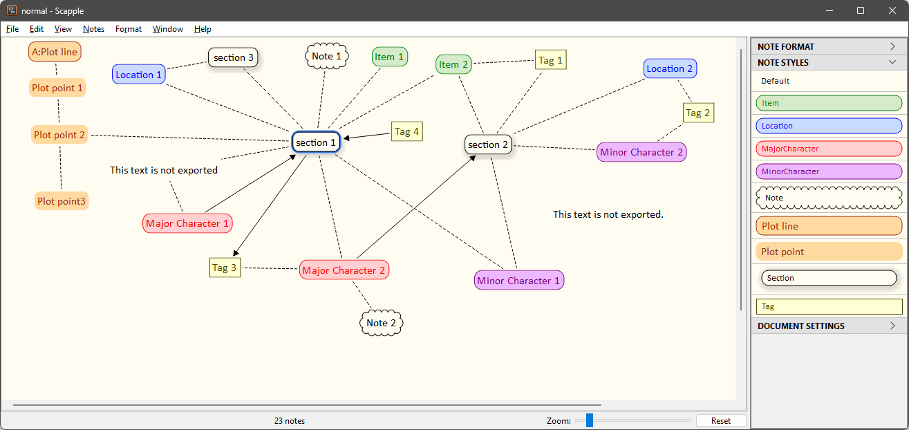

scap_novx
User guide
This page refers to the latest scap_novx release.
The scap_novx Python script creates a novelibre project from a Scapple outline.
Instructions for use
Intended usage
The included installation script prompts you to create a shortcut on the desktop. You can launch the program by dragging a scap file and dropping it on the shortcut icon.
Command line usage
Alternatively, you can
launch the program on the command line passing the scapple file as an argument, or
launch the program via a batch file.
usage: scap_novx.py [--silent] Sourcefile
positional arguments:
Sourcefile
The path of the Scapple outline file.
optional arguments:
--silent suppress error messages and the request
to confirm overwriting
Mode of operation
scap_novx generates a new novelibre project file with
the same file name as the Scapple source file,
but with the extension .novx.
It is placed in the same directory as the source file.
Note
If the novelibre project already exists, it would not be overwritten. Character/Location/Item XML files are generated instead. They can be imported into any novelibre project.
Conversion rules
Notes with a shadow are converted to sections.
Sections are ordered by their position in the Scapple diagram (from top left to bottom right).
Bordered notes with brown text are converted to plot lines. You can prefix the title with a short name separated by a colon.
Notes without a border with brown text are converted to plot points.
Notes with red text are converted to major characters.
Notes with purple text are converted to minor characters.
Notes with blue text are converted to locations.
Notes with green text are converted to items.
Assign characters/locations/items to a section by connecting the corresponding notes.
Assign tags to sections/characters/locations/items by connecting the corresponding notes.
Assign a viewpoint character to a section by creating an arrow pointing from the character to the section. If a section is pointed to by several characters, or by no character, the viewpoint is random.
Assign sections to plot lines using connections either to the plot line or to one of its plot points.
Connect the first plot point to the plot line, then connect the following plot points as a chain in sequential order.
Assign plot points to a section using a connection.
Notes with a “cloud” border and without a shadow are converted to element notes.
Notes with a square border and without a shadow are converted to tags.
Plain notes are converted to descriptions of the elements they are connected to.
How to mark notes for export
Import styles
The scap_novx distribution comes with a sample Scapple project styles.scap including all required styles.
You find this a sample project in the novelibre installation directory under
c:\Users\<user name>\.novx\scap_novx\sample\
You can either use this diagram as a template, or import the styles into your own Scapple diagram.

In the file picker dialog, select
c:\Users\<user name>\.novx\scap_novx\sample\styles.scap.
Then you can apply the styles via context menu.
Optionally, you can apply the styles via the Inspector.
Mark sections
Apply the Section style via context menu or the Inspector.
Mark plot lines
Apply the Plot line style via context menu or the Inspector.
Mark plot points
Apply the Plot point style via context menu or the Inspector.
Mark notes
Apply the Note style via context menu or the Inspector.
Mark locations
Apply the Location style via context menu or the Inspector.
Mark major characters
Apply the MajorCharacter style via context menu or the Inspector.
Mark minor characters
Apply the MinorCharacter style via context menu or the Inspector.
Mark items
Apply the Item style, via context menu or the Inspector.
Custom configuration
You can override the default settings by providing a configuration file. Be always aware that faulty entries may cause program errors.
Global configuration
An optional global configuration file can be placed in the
configuration directory in your user profile.
It is applied to any project.
Its entries override scap_novx’s built-in constants.
This is the path:
c:\Users\<user name>\.novx\scap_novx\scap_novx.ini
Local project configuration
An optional project configuration file scap_novx.ini2novx.ini
can be placed in your project directory, i.e. the folder containing
your novelibre and Timeline project files.
It is only applied to this project.
Its entries override scap_novx’s built-in constants as well as
the global configuration, if any.
How to provide/modify a configuration file
You find the a sample configuration file with the scap_novx default values in the novelibre installation directory under
c:\Users\<user name>\.novx\scap_novx\sample\
You best make a copy and edit it.
The SETTINGS section mainly refers to colors, i.e. The text colors that mark the characters/locations/items in Scapple. If you change them, the program might behave differently than described in the description of the conversion rules below.
The OPTIONS section comprises options for regular program execution.
Comment lines begin with a
#number sign. In the example, refer to the code line immediately above.
This is the configuration file explained:
[SETTINGS]
location_color = 0.0 0.0 1.0
# RGB text color that marks the locations in Scapple.
item_color = 0.0 0.5 0.0
# RGB text color that marks the items in Scapple.
major_chara_color = 1.0 0.0 0.0
# RGB text color that marks the major characters in Scapple.
minor_chara_color = 0.5 0.0 0.5
# RGB text color that marks the minor characters in Scapple.
plot_line_color = 0.6 0.2 0.0
# RGB text color that marks the plot lines and plot points in Scapple.
[OPTIONS]
export_sections = Yes
# Yes: create sections from Scapple notes.
export_plot_lines = Yes
# Yes: create plot lines and plot points from Scapple notes.
export_characters = Yes
# Yes: create characters from Scapple notes.
export_locations = Yes
# Yes: create location from Scapple notes.
export_items = Yes
# Yes: create items from Scapple notes.
Installation path
The setup script installs scap_novx.py in a defined place. This is the installation path on Windows:
c:\Users\<user name>\.novx\scap_novx